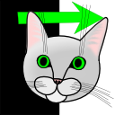
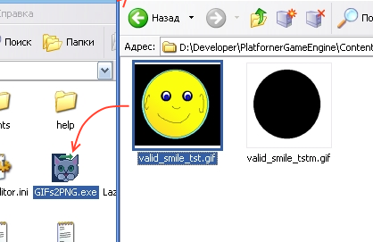
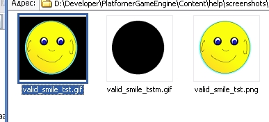

GIFs2PNG - is a converter which create the transparent PNG image from the SMBX64 GIFs pair which using the mask for define transparency.
Example of the source GIF image pair


And example of the target PNG image:

GIFs2PNG - is a console tool, you need open the terminal or command line and change directory to the GIFs2PNG tool.
To convert all graphics which are in one folder:
GIFs2PNG C:\SMBX\worlds\episode1\level3
To convert all graphics of an whole episode, you need use the "-W" switch:
GIFs2PNG -W C:\SMBX\worlds\episode1
Also you can remove source images with switch "-R":
GIFs2PNG -W -R C:\SMBX\worlds\episode1
Also you can simply drag image files into GIFs2PNG application, and it will run conversion of these images
Before conversion

After conversion:

The Editor have a GUI shell for set properties to the GIFs2PNG.
For open them, try the menu item: "Tools -> External tools -> Convert GIF with mask to PNG (GIFs2PNG)"
And you can configure properties for setup the batch converting.

When you press "Start", will be opened the "Developement Console" window, where you will see the converting process.
Copyright © 2014-2015 Platformer Game Engine by Wohlstand project. All rights reserved.